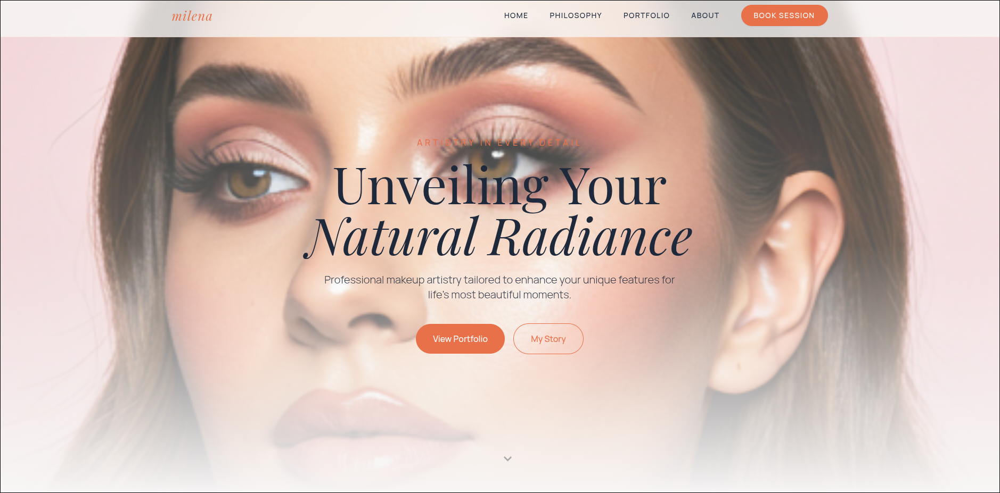

Real cases. Real impact.
Projects that optimized sales, automated operations, and improved internal management.

E-commerce + Comprehensive Management
I designed and implemented a complete e-commerce platform with an integrated order and shipping system, reducing operational friction and improving the shopping experience.

Sales and Administration Platform
I developed a digital ecosystem that integrates sales, customer management, and product control into a single system, allowing operations to scale more efficiently.

Strategic Professional Presence
I created a modern digital platform that positions the brand, facilitates client contact and professionalizes service presentation.


Business Management System
I implemented a comprehensive system with a control panel and key metrics that improve decision-making and optimize the company's daily operations.